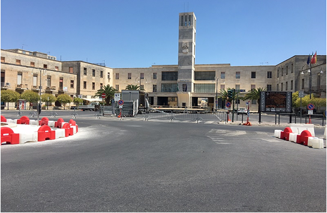
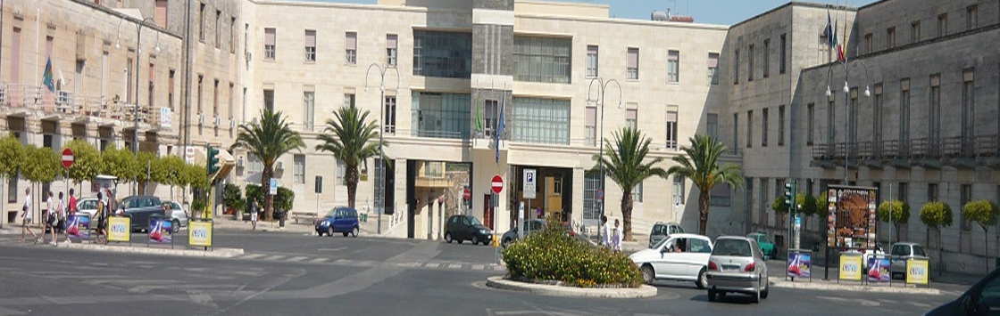
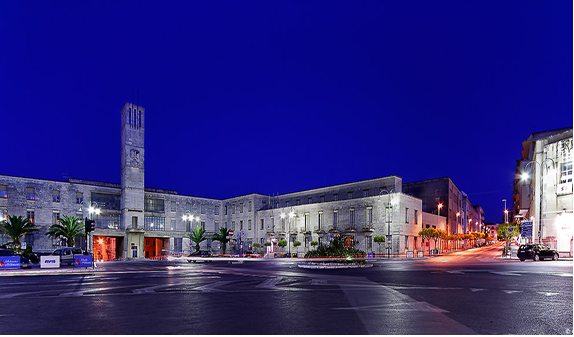
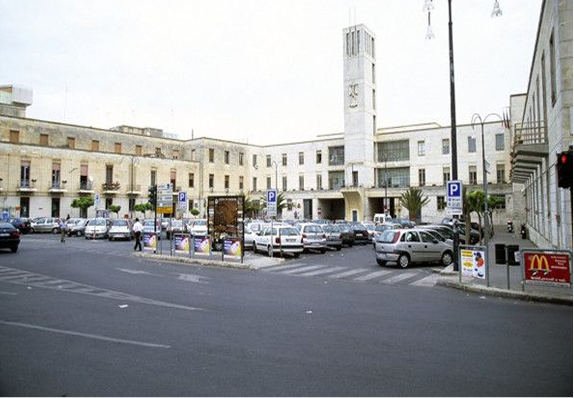

La piazza simbolo del centro storico
Piazza Libertà si trova nel centro storico di Ragusa, rappresentando uno dei punti nevralgici della città. Circondata da eleganti edifici storici e palazzi barocchi, la piazza è un luogo di incontro per cittadini e visitatori, che possono godere della bellezza architettonica e dell’atmosfera vivace del centro.
La piazza è circondata da edifici che riflettono lo stile barocco tipico di Ragusa, con facciate decorate, balconi in ferro battuto e portici che raccontano secoli di storia. Questa combinazione di dettagli architettonici rende Piazza Libertà un luogo ricco di fascino e di interesse culturale.

Vita sociale e momenti di relax
Oggi Piazza Libertà è molto più di un sito storico: caffè, ristoranti e locali animano gli spazi pedonali, creando un punto di ritrovo ideale per passeggiare, incontrarsi o semplicemente godersi la città.
La piazza diventa spesso scenario di eventi, mercati e manifestazioni culturali, mantenendo vivo il tessuto sociale della città.

Un luogo panoramico e suggestivo
Piazza Libertà offre scorci panoramici sui tetti del centro storico e sulle vie circostanti. Passeggiare tra le statue della piazza permette di apprezzare non solo la città, ma anche l’equilibrio tra storia, arte e vita quotidiana che caratterizza Ragusa.
Situata nel cuore della città, Piazza Libertà è facilmente raggiungibile a piedi dalle principali strade e piazze di Ragusa. La sua posizione centrale la rende un ottimo punto di partenza per esplorare il centro storico, i vicoli barocchi e gli altri luoghi di interesse culturale della città.
